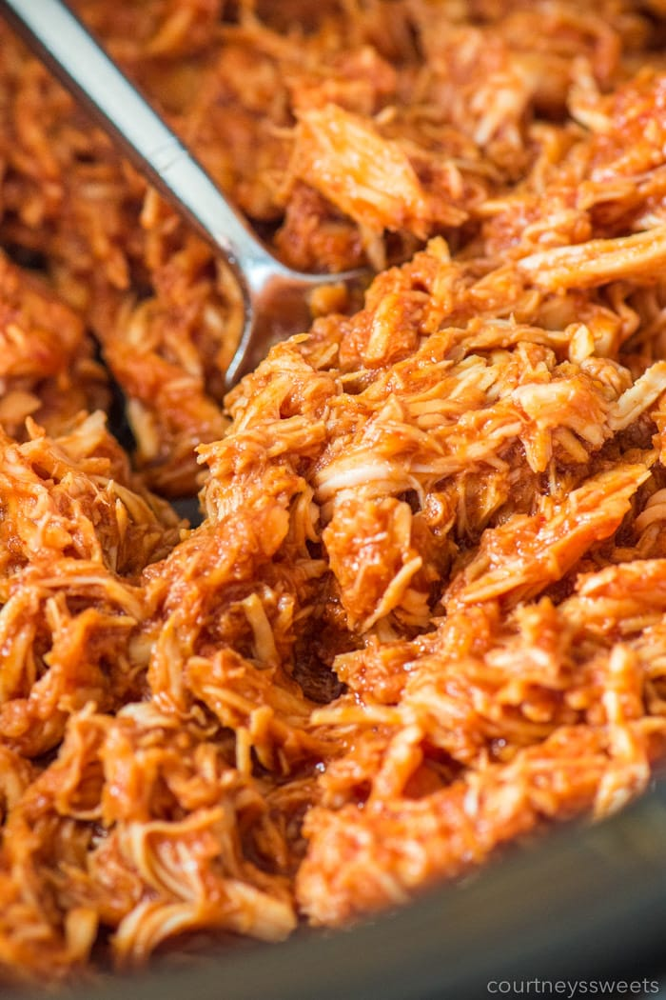

Pulled BBQ Chicken

About this Recipe:
This is a simple way to cook BBQ Pulled chicken. It requires a few simple indgredients and minimal effort.
It will require about 5 hours to cook using a slow cooker. Shred the chicken while it's how to make it simple.
You can eat on any type of bun. Pretzel buns toasted with butter are my favorite.
Indgredients:
- 3 lbs boneless chicken breast
- 1 TBsp Apple Cider Vinegar
- 1 can of soda
- 2 tsp minced garlic
- 16oz bbq sauce
Steps:
- In a slow cooker place chicken breasts in and fill with water until tops of chicken breast are covered.
- Cook on HI for 4 hours
- Drain water and pull chicken apart using 2 forks
- Place chicken back into slow cooker and add all other indgredients
- Stir mixture and cook on low for at least 1 hour
- Add more bbq sauce, vinegar, soda, or garlic to taste preference
- Serve on your choice of buns